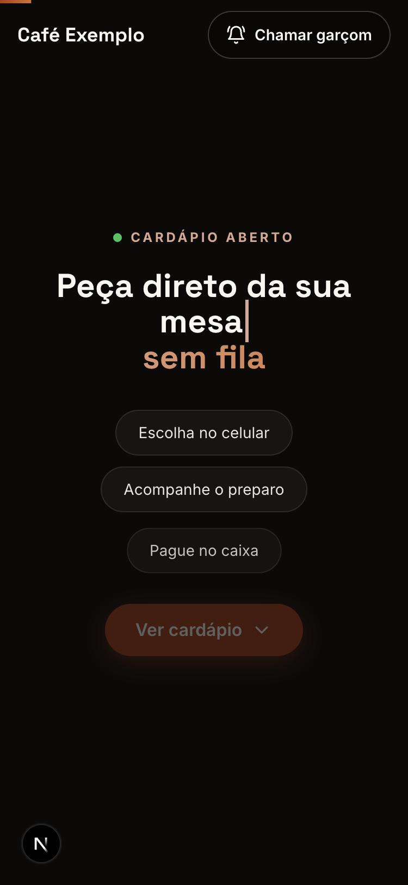
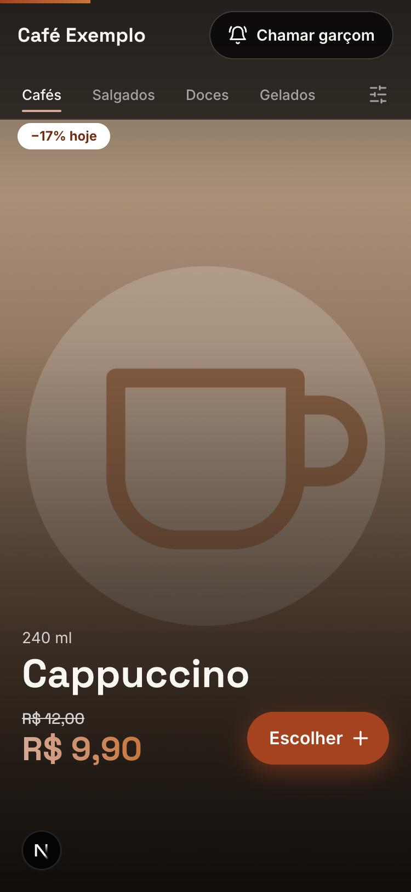
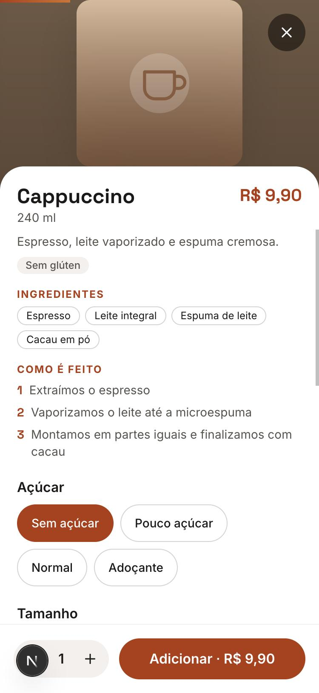

O que é
Um cardápio digital com fotos, ingredientes e opções, e uma comanda da mesa onde você acompanha o que pediu.
Demonstração · café fictício
Escolha no celular, acompanhe o preparo e pague no caixa. Experimente aqui como é, sem pedir de verdade.
Sobre esta página
Esta é uma página de demonstração. Aqui você experimenta, sem compromisso, como é pedir em um café usando só o celular, do jeito que seria sentado à mesa. Assim você conhece o cardápio digital antes de usá-lo de verdade.
Um cardápio digital com fotos, ingredientes e opções, e uma comanda da mesa onde você acompanha o que pediu.
Percorrer o cardápio, escolher e personalizar itens, combinar com outros, enviar um pedido e ver o andamento dele.
O café, os produtos e os preços são fictícios, e nenhum pedido é enviado de verdade. O andamento do pedido é só uma simulação.
Como funciona para você
O que você vê no celular



Dúvidas comuns
Não. Tudo abre direto no navegador do celular, a partir da tag ou do QR code da sua mesa.
Não para pedir. Na versão completa, o cadastro é opcional e serve para receber promoções, ganhar desconto e juntar selos no cartão fidelidade.
No caixa, no final. Você pede a conta pelo celular, e o garçom ou o caixa cuidam do resto. Não há pagamento pelo aplicativo.
Sim, a qualquer momento, pelo botão “Chamar garçom”. Ele recebe o aviso na hora.
Há filtros para “sem glúten”, “sem lactose” e “vegano”, e cada produto mostra os ingredientes.
Podem. Todos na mesa usam a mesma comanda, cada um no próprio celular, e a conta é da mesa.
Não. É só um teste: o café é fictício e nada é enviado a ninguém.